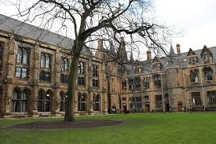
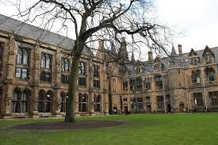
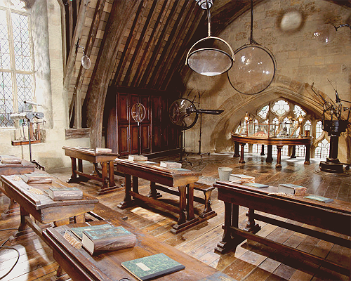
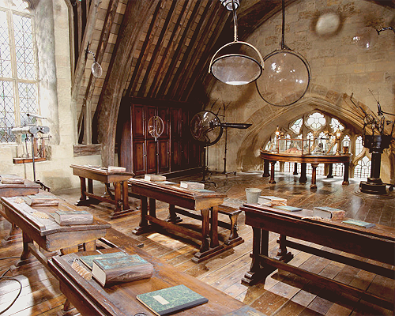

 


HUFFLEPUFF
A Brief Description of Hufflepuff
Hufflepuff is one of the four Houses of Hogwarts School of Witchcraft and Wizardry. Its founder was the medieval witch Helga Hufflepuff. Hufflepuff is the most inclusive among the four houses; valuing hard work, dedication, patience, loyalty, and fair play rather than a particular aptitude in its members. The emblematic animal is a badger, and yellow and black are its colours. The Head of Hufflepuff is Pomona Sprout and the Fat Friar is the House's patron ghost.
Hufflepuff corresponds roughly to the element of earth, and it is for that reason that the House colours were chosen: yellow represented wheat, while black was emblematic of soil. The Hufflepuff point hourglass contains yellow diamonds. Students sorted into Hufflepuff often demonstrate exceptional abilities in Herbology, owing to their correspondence to earth.
Traits
Students belonging to this house are known to be hard-working, friendly, loyal, honest and rather impartial. It may be that due to their values, Hufflepuffs are not as competitive as the other houses, and are more modest about their accomplishments. Hufflepuff is the most inclusive among the four houses; valuing hard work, dedication, patience, loyalty, and fair play rather than a particular aptitude in its students.
Hufflepuffs are known to have a strong moral code, and a sense of right and wrong. Hufflepuffs are usually accepting of everyone. Students in Hufflepuff are known to value everyone and treat them as equal.
Hufflepuff appears to have the least rivalry with the other houses, except in Quidditch, although the Triwizard Tournament did temporarily put a great deal of strain on the relationship between Gryffindor and Hufflepuff, due to unusual circumstances of the selection of both Gryffindor student Harry Potter and Hufflepuff student Cedric Diggory as Champions. This was mended by 1998, where a majority of Hufflepuffs rose to defend Harry from Pansy Parkinson and later helped to defend Hogwarts.
Reputation
According to Minerva McGonagall, all four of the houses have produced exceptional witches and wizards in their time, but due to Helga Hufflepuff's policy of accepting any student Hufflepuff is often thought to be the house of less talented wizards and witches. However, this is merely a misunderstanding of the Sorting Hat's poem. The Hufflepuff house has produced a great many of successful and influential members of the wizarding world, such as the famous Magizoologist Newton Scamander. A great number of exceptionally skilled witches and wizards also have their origins on this house, including noted Arithmancer Bridget Wenlock, and former Minister for Magic Artemisia Lufkin. What makes Hufflepuff differ from the other houses is the fact that they don't tend to boast about these accomplishments; it is not considered to be part of their nature.
Hufflepuff is the house that produced the fewest dark wizards throughout its history. Their cheerful and friendly demeanour can probably account for this property of the House. Hufflepuff firmly demonstrated its loyalty during the Battle of Hogwarts in 1998, when they were second only to Harry Potter's own house of Gryffindor in the number of students willing to stay and fight against Voldemort and his forces in the defence of their school.
Common Room
The Hufflepuff dormitories and common room have never been seen by outsiders and is the only house with repelling devices in case of intruders. They are accessed through a pile of large barrels, found stacked in a shadowy stone recess on a right-hand side corridor near the kitchens. The barrel two from the bottom, middle of the second row, will open if tapped in the rhythm of 'Helga Hufflepuff'.
As a security device to repel non-Hufflepuff students, tapping on the wrong barrel, or tapping the incorrect number of times, results in one of the other lids bursting off, drenching the impostor in vinegar.
However, once you make it through the tunnel entryway, the Hufflepuff dormitory is a quite cosy and welcoming place; it always feels sunny. The common room is a large, earthy, round room with low ceilings. The view from the round windows is of dandelions and rippling grass.
The decor emphasises the earthy-feel of the room with plants hanging and resting all about the room, some that even sing and dance. Burnished copper touchings with plush, cosy yellow and black patterned sofas and chairs welcome Hufflepuff students to relax and discuss the interesting specimens brought in by the Head of House, Professor Sprout. A Hufflepuff student retires through big, round doors in the walls of the common room to their dormitory.